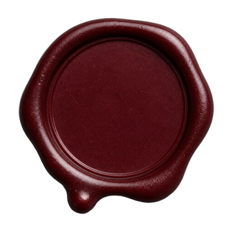

「存在にアリバイはない。」
Mikhail Bakhtin · 1895–1975
no_als02 entries

参加者の登記。 no_alibiの作品は、観客が残した意見を改訂に反映し、誰がどこにどう貢献したかをクレジットに透明に記録する。
作品に実際の変化をもたらした参加者には別途のクレジットを、希望する場合は芸術活動の証明として使えるクレジット証明書を発行する。
存在にアリバイはない — ここに残されたものはすべて記録に載る。
作品はオンラインではなく、上映館と展示館の暗がりにある。
ここにあるのは、その暗がりを共に照らした声である。